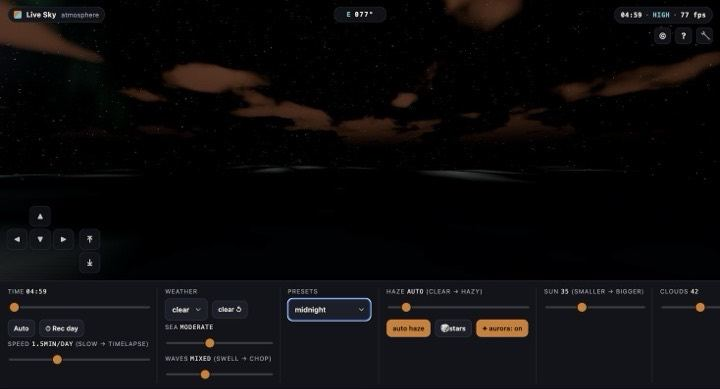
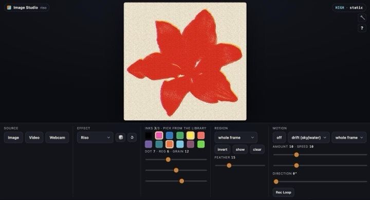
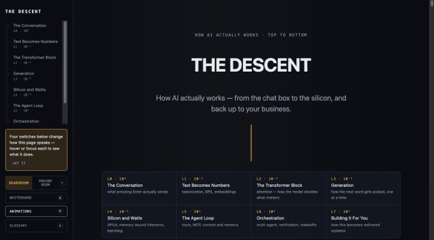
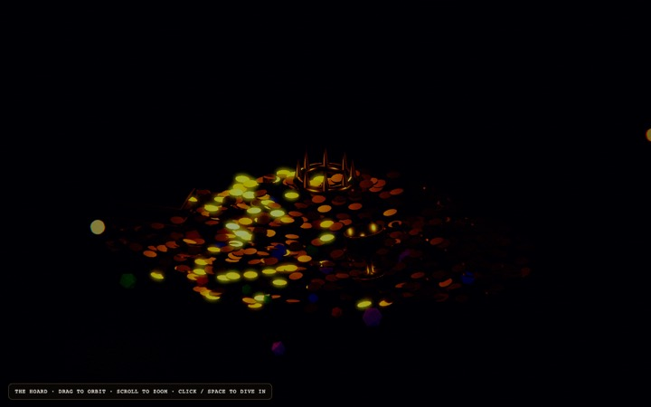

Live demos & shipped products
Everything public in one place — engine demos below, three shipped products above. Tap a card and try it; best on a real GPU, works on phones.
Shipped products — built on this engine, live at lgrwebstudios.com

Real-astronomy sky simLive Sky
A physically-based atmosphere you scrub, fly through, and light-pollute: real weather, sea state, and a full real-sky mode — the Yale Bright Star Catalogue, all 7 planets from NASA JPL orbital elements, all 110 Messier objects, and a continuous Bortle 1–9 slider that fades stars in by real magnitude as the sky darkens.

Client-side image/video FXImage Studio
Seven real-time effect modes — pixel & dither, blur, halftone, edge-ink, CRT, ASCII, and riso — applied to a photo, a video, or your webcam, with region masking (rectangle, brush, or preset zones) and PNG/MP4 export. Nothing ever uploads; every frame is processed on your GPU.

Interactive AI explainerThe Descent
How a large language model actually works, top to bottom: seven levels from the chat box down to GPU silicon and back up to a deployed multi-agent system — tokenization, attention, sampling, memory-bandwidth-bound inference, tool-calling, and orchestration. Includes a live "temperature lab" slider that reshapes a token-probability distribution as you drag it.
Engine demos — the WebGL engine itself, running live
 Scroll-driven flight · product configurator
Scroll-driven flight · product configurator
The Showcase
One continuous shot: the camera flies a procedural city while you scroll, the day runs from golden hour to night, and the art style morphs mid-flight from realistic to toon and back. At the bottom you take the controls and become one of four bodies in that same city, then a studio-lit product turns on its own stage with live colourways.
Newest · six bodies, one seam
Metropolis
The whole engine in one place, and six ways to be in it: fly over the harbour, drive its streets, walk at eye level, take the helm of a boat, ride the air as a gull — then bring the gull down onto the water and keep going as a fish. Click any tower and the camera dives through the glass into a warm office interior, the living city still moving outside the window. Scrub the day from pre-dawn to midnight, roll in rain, snow or fog, and switch on a real-astronomy sky for the actual stars above that date.
 Engine showcase
Engine showcase
The Open City
A living procedural city: fly a craft over it, sweep day↔night, roll weather & seasons, switch style tiers (beauty / toon / pixel / vector), and apply colour-grade looks. Dive into an office interior, or flip on survival mode in-city.
 Survival game
Survival game
The Hoard
A top-down wave-survival game showcasing the arena stack: flow-field horde AI, projectile ballistics, GPU particle FX, blood & scorch decals, and a rigged zombie horde. Press F to DIVE into first person and walk the forest arena in the thick of the horde.
 One-shot · staged
One-shot · staged
Hoard v2
The Hoard rebuilt fresh in a single multi-agent run: three zombie types crowd-pathing a flow field, build-and-breach fortification, harvest + hunger/stamina survival, a real day↔night cycle, and the iso→first-person dive. Five arenas, all through one shared interpreter that turns a plain-text description into a playable world — forest, swamp, lakeshore, coast, and a full generated city.

Tech demoCavern Dive
The iso→first-person "dive" seam as a focused tech demo: drop from a top-down view straight into the survivor's eyes inside a treasure cavern, with time dilation on the descent.
 Scene
Scene
The Office
The standalone office interior — the scene the city's office-dive lands in, on its own: glass-city view through the windows, props, and the seated look-around.
 CS Visualizations
CS Visualizations
Algorithms, alive
Interactive, zero-dependency visualizations of core computer-science ideas — built to teach by watching them run. No install, no signup; each loads instantly and works on any phone.